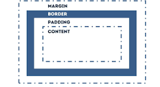

Belajar BOX Model
| Property | Fungsi |
|---|---|
| border-style | Untuk menentukan gaya border |
| border-width | Untuk menentukan lebar border |
| Padding | Untuk menentukan jarak antara border dengan konten |
| Margin | Untuk menentukan jarak antara border dengan elemen lain |

Border
border-style: dotted; border-width: 5px; border-top-style: double; border-right-style: groove; border-bottom-style: ridge; border-left-style: inset;
border-top-width: 5px; border-right-width: 10px; border-bottom-width: 15px; border-left-width: 20px;
border-style urutan : atas, kanan, bawah, kiri
border-width urutan : atas, kanan, bawah, kiri
border-style: double groove ridge inset;
border-width: 5px 10px 15px 20px;
Padding
Inline
Menggunakan display: inline-block;
Ini adalah contoh inline
Ini adalah contoh inline
Ini adalah contoh inline